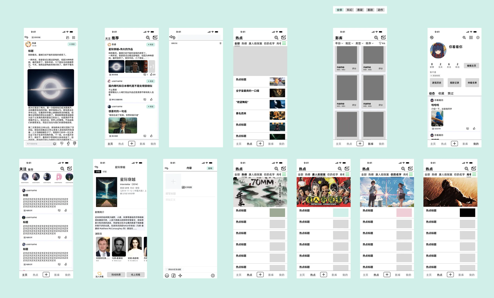
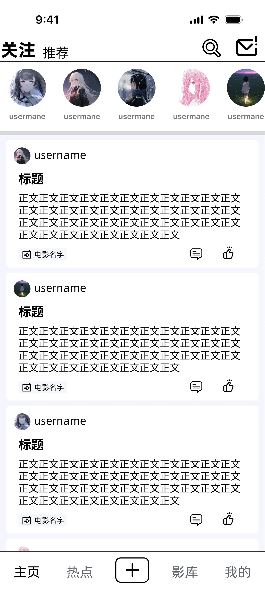
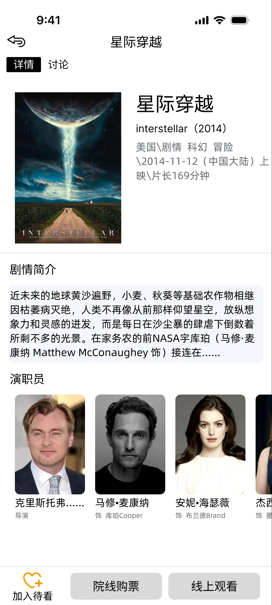
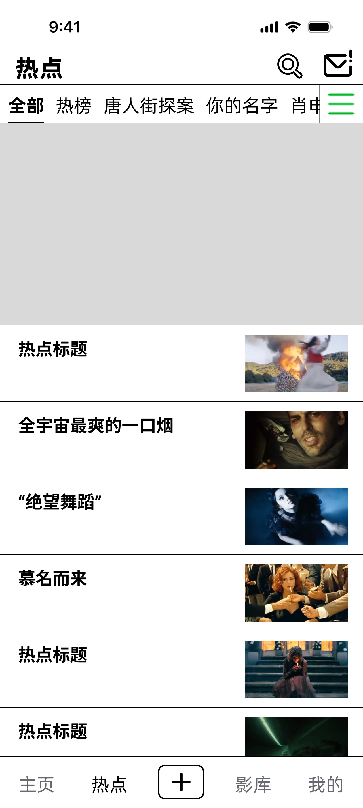
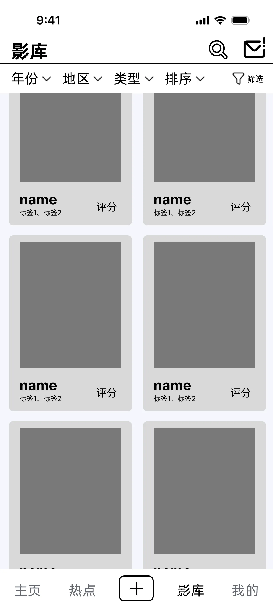
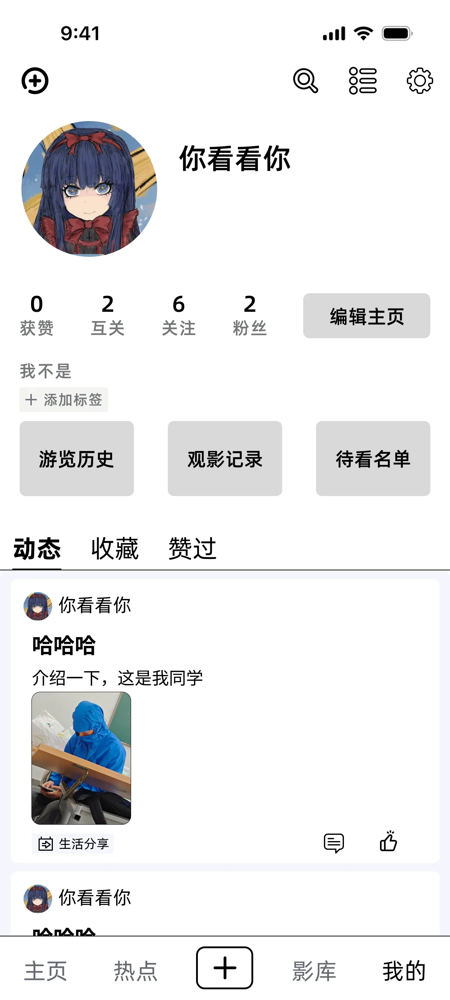
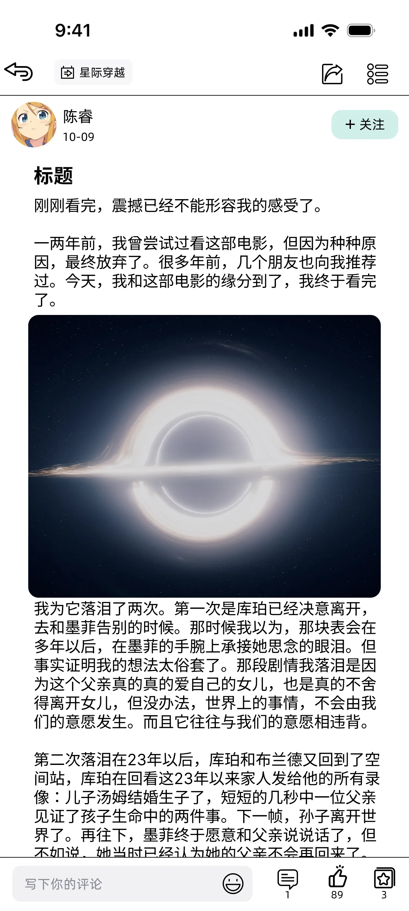

01 / PRODUCT EXPERIENCE
课程项目 · 电影发现与决策平台
电影盒子
为爱分享、想快速选片的年轻人，设计一个集合轻社交、个性化推荐和观影入口的电影平台。

01
从“片荒”开始
用户面对院线新片、经典老片和不同平台的信息时，往往需要反复比较。现有平台各自解决评分、购票或播放，却很少把发现、判断和观看连接起来。


02
三种方案，最后选择分享种草流
我探索了分享种草流、推荐导向流和沉浸信息流。最终选择分享种草流，是因为它更贴近年轻用户通过短句、片段和朋友推荐发现电影的习惯。
分享→了解→收藏→观看
03
把主要任务串起来
核心路径是浏览推荐、阅读分享、查看影片、加入想看，再根据影片信息选择购票或线上观看。界面设计围绕这条路径逐步收敛。



